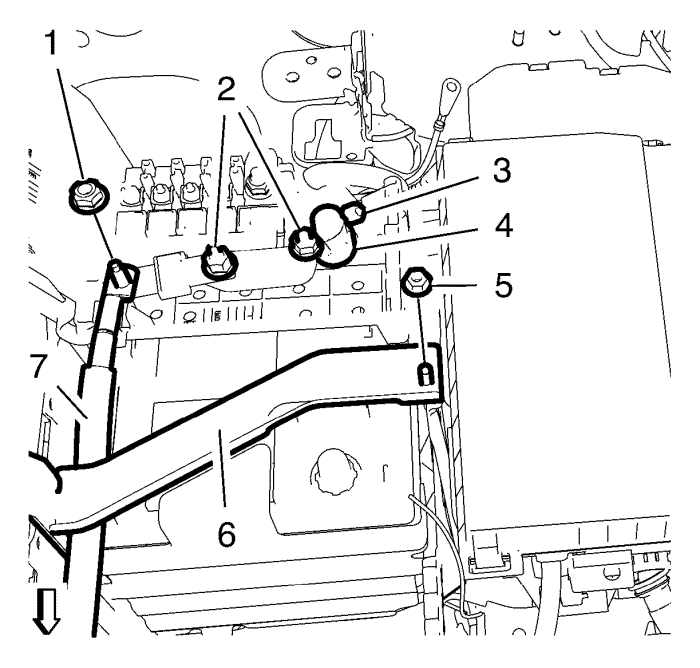
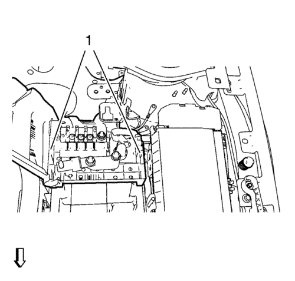
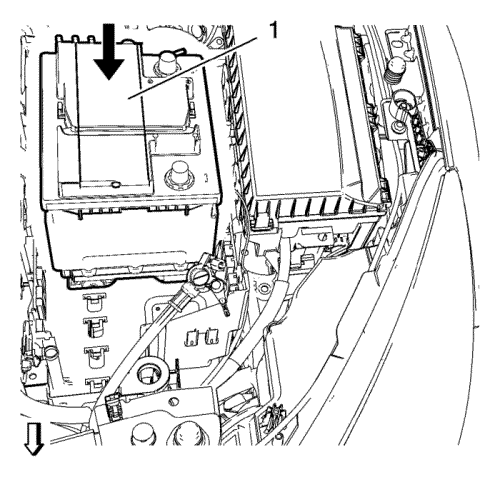
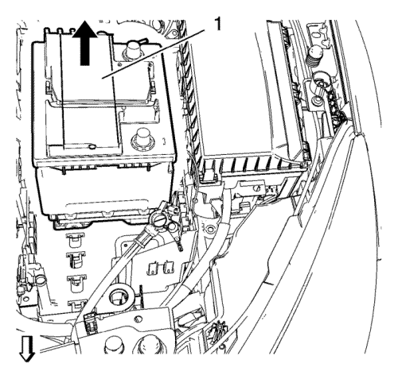
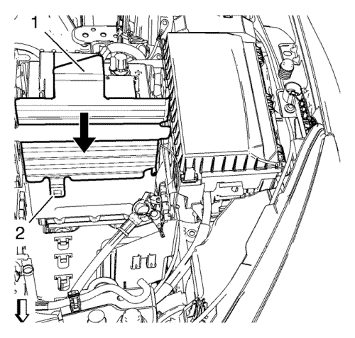
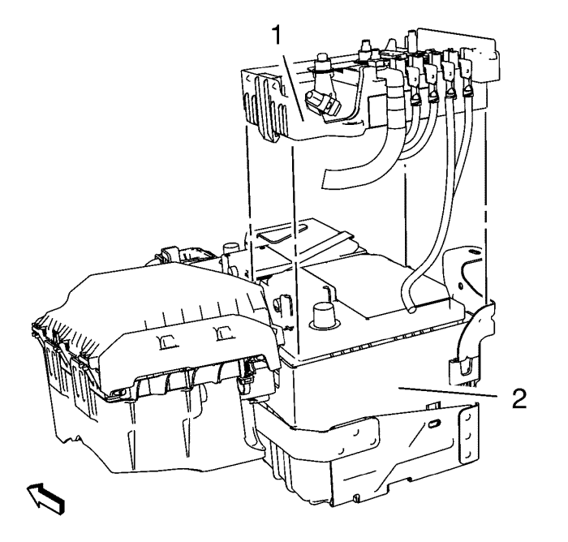

Sustitución de la batería — Gasolina
Herramienta especial
GE-49379 Herramienta de desmontaje de la batería
Si desea informarse sobre herramientas regionales equivalentes, consultar Herramientas especiales .
Procedimiento de desmontaje
- Abra el capó.
- Extraiga la tapa de la batería. Consultar Sustitución de la tapa de la batería .
- Desconecte el cable negativo de la batería. Consulte Desconexión y conexión del cable negativo de la batería → sin sistema de arranque/parada.
- Abra la tapa del bloque de fusibles de la batería.

- Desmonte la tuerca de la sujeción de la batería (5).
- Desmonte la sujeción de la batería (6).
- Retire la tuerca que une el cable positivo de la batería al cable del motor de arranque (1).
- Retire el cable positivo de la batería que va al cable del motor de arranque (7).
- Afloje las 2 tuercas de la placa positiva de la batería (2).
- Afloje la tuerca del cable positivo de la batería (3).
- Desmonte el cable positivo de la batería (4).

- Suelte los clips de soporte del bloque de fusibles (1) de la batería y desmonte el bloque de fusibles de la batería junto con el cable positivo de la batería.
Nota: Sólo es necesario si el vehículo está equipado con una batería corta.
- Suelte los clips de la sujeción del protector de la bandeja de la batería (2) de la bandeja de la batería.
- Desmonte el protector de la bandeja de la batería (1) moviéndolo en la dirección de la flecha.

- Mueva la batería (1) en la dirección de la flecha y extráigala con la herramienta de desmontaje GE-49379.
Procedimiento de montaje

- Monte la batería (1) con la herramienta de desmontaje GE-49379 y muévala en la dirección de la flecha hasta que descanse sobre la bandeja de la batería.

- Monte el protector de la bandeja de la batería (1) en la bandeja de la batería y muévalo en la dirección de la flecha hasta que la sujeción (2) encaje con la bandeja de la batería.

- Alinee exactamente el lateral trasero de la caja de fusibles de la batería (1) con el lateral trasero de la batería (2).
- Monte el cable positivo de la batería (4) en la batería.
Precaución:Consulte Precaución con las fijaciones en la sección Prólogo.
- Apriete la tuerca del cable positivo de la batería (3) a 4,5 N·m (40 lib. pulg.).
- Apriete las 2 tuercas de la placa positiva de la batería (2) a 12 N·m (106 lib. pulg.).
- Monte el cable positivo de la batería que va al cable del motor de arranque (7).
- Monte la tuerca que une el cable positivo de la batería al cable del motor de arranque (1) y apriétela a 12 N·m (106 lib. pulg.).
- Monte la sujeción de la batería (6).
- Monte la tuerca de la sujeción de la batería (5) y apriétela a 9 N·m (80 lib. pulg.).
- Cierre y fije con clips la tapa de la caja de fusibles de la batería.
- Conecte el cable negativo de la batería. Consulte Desconexión y conexión del cable negativo de la batería → sin sistema de arranque/parada.
- Monte la tapa de la batería. Consultar Sustitución de la tapa de la batería .
- Cierre el capó.
| © Copyright Chevrolet. All rights reserved |